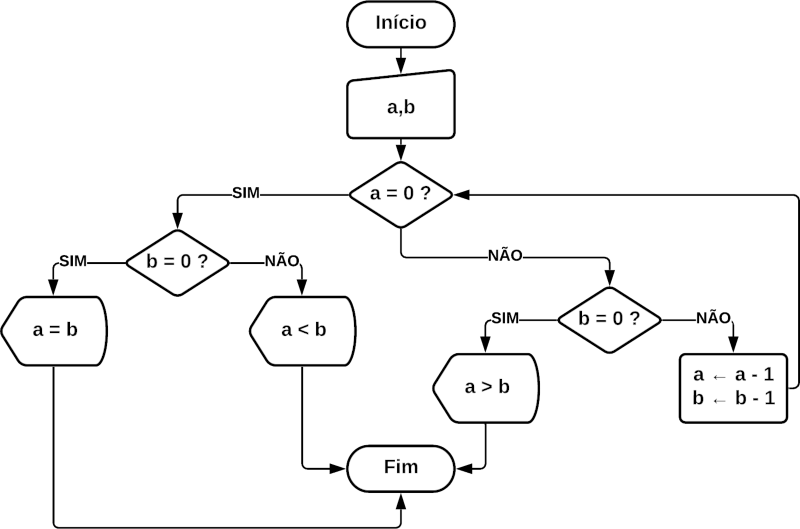

VisuAlg 3.0.7.0
1. Criem um programa que imprima a tabuada do número 9. Algo como 9x1 = 9, 9x2 = 18... imprima cada expressão em uma linha.
algoritmo "Exercicio1"
var i: inteiro
inicio
para i de 1 ate 10 faca
escreval("9 *",i," =",9 * i)
fimpara
fimalgoritmo2. Criem um programa que ao usuário digitar um número, o programa exiba o mês correspondente. Utilizem ESCOLHA. Validem a entrada do usuário para números válidos (1-12). Valores fora deste intervalo, devem imprimir "Mês inválido! Tente novamente" e permitir que o usuário entre com um novo valor. O programa encerra digitando 0 (zero).
algoritmo "Exercicio2"
var mes: inteiro
inicio
repita
escreva("Digite o mês [1 - 12] ou [0] para sair:")
leia(mes)
se mes = 0 entao
escreval("Encerrado")
senao
escolha mes
caso 1
escreval("Janeiro")
caso 2
escreval("Fevereiro")
caso 3
escreval("Março")
caso 4
escreval("Abril")
caso 5
escreval("Maio")
caso 6
escreval("Junho")
caso 7
escreval("Julho")
caso 8
escreval("Agosto")
caso 9
escreval("Setembro")
caso 10
escreval("Outubro")
caso 11
escreval("Novembro")
caso 12
escreval("Dezembro")
outrocaso
escreval("Mês invalido! Tente novamente.")
fimescolha
fimse
ate mes = 0
fimalgoritmo3. Crie um procedimento que receba dois valores reais digitados pelo usuário e, com estes imprima o resultado das quatro operações aritméticas.
algoritmo "Exercicio3"
var v1, v2: real
procedimento realizarOperacoesAritmeticas(valor1, valor2: real)
inicio
escreval("Adição:", valor1 + valor2)
escreval("Subtração:", valor1 - valor2)
escreval("Multiplicação:", valor1 * valor2)
escreval("Divisão:", valor1 / valor2)
fimprocedimento
inicio
escreva("Digite o valor 1: ")
leia(v1)
escreva("Digite o valor 2: ")
leia(v2)
realizarOperacoesAritmeticas(v1, v2)
fimalgoritmo4. Criem um programa que represente o fluxograma abaixo:

algoritmo "Exercicio4"
var a, b: inteiro
funcao testar(valorA, valorB: inteiro): inteiro
inicio
se valorA = 0 entao
se valorB = 0 entao
escreva("A = B")
senao
escreva("A < B")
fimse
senao
se valorB = 0 entao
escreva("A > B")
senao
valorA <- valorA - 1
valorB <- valorB - 1
retorne testar(valorA, valorB)
fimse
fimse
retorne 0
fimfuncao
inicio
escreva("Digite o valor de A: ")
leia(a)
escreva("Digite o valor de B: ")
leia(b)
escreva(testar(a, b))
fimalgoritmo5. Determinar se um número é par ou ímpar e positivo ou negativo.
algoritmo "Exercicio5"
var numero: inteiro
inicio
escreva("Digite um número: ")
leia(numero)
se numero >= 0 entao
se numero % 2 = 0 entao
escreva("positivo e par")
senao
escreva("positivo e ímpar")
fimse
senao
se numero % 2 = 0 entao
escreva("negativo e par")
senao
escreva("negativo e ímpar")
fimse
fimse
fimalgoritmo6. Faça um algoritmo que calcule a soma dos números inteiros de 1 a 100.
algoritmo "Exercicio6"
var i, soma: inteiro
inicio
para i de 1 ate 100 faca
soma <- soma + i
fimpara
escreva(soma)
fimalgoritmo7. Faça um algoritmo que lê uma temperatura em Fahrenheit e calcula a temperatura correspondente em Celsius. Ao final o programa deve exibir as duas temperaturas (formatadas com até 2 casas decimais). Usar a fórmula C = (5 * (F-32) / 9).
algoritmo "Exercicio7"
var tempFahrenheit, tempCelsius: real
inicio
escreva("Digite a temperatura em Fahrenheit: ")
leia(tempFahrenheit)
tempCelsius <- (5 * (tempFahrenheit - 32) / 9)
escreval(tempFahrenheit:2,"º F")
escreval(tempCelsius:2,"º C")
fimalgoritmo8. Numa eleição existem três candidatos identificados pelos números 1, 2 e 3. Faça um algoritmo que compute o resultado de uma eleição. Inicialmente o programa deve pedir o número total de votantes. Em seguida, deve pedir para cada votante votar (informando o numero do candidato) e ao final mostrar o número de votos de cada candidato.
algoritmo "Exercicio8"
var c1, c2, c3, qtdeVotantes, i, voto: inteiro
inicio
escreva("Digite o total de votantes: ")
leia(qtdeVotantes)
para i de 1 ate qtdeVotantes faca
escreva("Digite seu voto (1 | 2 | 3): ")
leia(voto)
enquanto (voto <> 1) e (voto <> 2) e (voto <> 3) faca
escreva("Candidato inexistente! Tente novamente (1 | 2 | 3): ")
leia(voto)
fimenquanto
se voto = 1 entao
c1 <- c1 + 1
senao
se voto = 2 entao
c2 <- c2 + 1
senao
c3 <- c3 + 1
fimse
fimse
fimpara
escreval("Votos C1: ",c1)
escreval("Votos C2: ",c2)
escreval("Votos C3: ",c3)
fimalgoritmo9. Anacleto tem 1.50m e cresce 2cm por ano, enquanto Felisberto tem 1.10m e cresce 3cm por ano. Construa um programa que calcule e apresente quantos anos serão necessários para que Felisberto seja maior que Anacleto.
algoritmo "Exercicio9"
var alturaAnacleto, alturaFelisberto: real
i: inteiro
inicio
alturaAnacleto <- 1.50
alturaFelisberto <- 1.10
i <- 0
repita
i <- i + 1
alturaAnacleto <- alturaAnacleto + 0.02
alturaFelisberto <- alturaFelisberto + 0.03
ate alturaFelisberto > alturaAnacleto
escreva("Quantidade de anos: ",i)
fimalgoritmo10. Faça um algoritmo que leia a idade de uma pessoa expressa em anos, meses e dias e mostre-a expressa apenas em dias.
algoritmo "Exercicio10"
var ano, mes, dia: inteiro
inicio
escreva("Digite a idade em anos: ")
leia(ano)
escreva("Digite a idade em meses: ")
leia(mes)
escreva("Digite a idade em dias: ")
leia(dia)
escreva("Idade em dias: ", ano * 365 + mes * 30 + dia)
fimalgoritmo11. Elabore um algoritmo que dada a idade de um nadador classifica-o em uma das seguintes categorias:
algoritmo "Exercicio11"
var idade: inteiro
categoria: caractere
inicio
escreva("Digite a idade: ")
leia(idade)
se (idade >= 5) e (idade <= 7) entao
categoria <- "infantil A"
senao
se (idade >= 8) e (idade <= 10) entao
categoria <- "infantil B"
senao
se (idade >= 11) e (idade <= 13) entao
categoria <- "juvenil A"
senao
se (idade >= 14) e (idade <= 17) entao
categoria <- "juvenil B"
senao
se (idade >= 18) entao
categoria <- "adulto"
senao
categoria <- "não definida"
fimse
fimse
fimse
fimse
fimse
escreva("Categoria: ",categoria)
fimalgoritmo12. Tendo como dados de entrada a altura e o sexo de uma pessoa (masculino (M) e (F) feminino), construa um algoritmo que calcule seu peso ideal, utilizando as seguintes fórmulas:
algoritmo "Exercicio12"
var h: real
sexo: caractere
inicio
escreva("Digite o sexo (m | f): ")
leia(sexo)
escreva("Digite a altura: ")
leia(h)
se (sexo = "m") ou (sexo = "M") entao
escreva("Peso ideal: ",72.7 * h - 58)
senao
se (sexo = "f") ou (sexo = "F") entao
escreva("Peso ideal: ",62.1 * h - 44.7)
fimse
fimse
fimalgoritmo13. Um vendedor necessita de um algoritmo que calcule o preço total devido por um cliente. O algoritmo deve receber o código de um produto e a quantidade comprada e calcular o preço total, usando a tabela abaixo. Se o código digitado não existir, peça ao usuário que entre com um código válido.
| Código do produto | Preço por unidade |
|---|---|
| 1001 | R$ 5,32 |
| 1324 | R$ 6,45 |
| 6548 | R$ 2,37 |
| 0987 | R$ 5,32 |
| 7623 | R$ 6,45 |
algoritmo "Exercicio13"
var codigoProduto, quantidade: inteiro
precoUnidade, precoTotal: real
inicio
escreva("Digite o código do produto: ")
leia(codigoProduto)
enquanto (codigoProduto <> 1001) e (codigoProduto <> 1324) e (codigoProduto <> 6548) e (codigoProduto <> 0987) e (codigoProduto <> 7623) faca
escreva("Código inválido! Tente novamente (1001 | 1324 | 6548 | 0987 | 7623): ")
leia(codigoProduto)
fimenquanto
escreva("Digite a quantidade: ")
leia(quantidade)
escolha codigoProduto
caso 1001
caso 0987
precoUnidade <- 5.32
caso 1324
caso 7623
precoUnidade <- 6.45
caso 6548
precoUnidade <- 2.37
fimescolha
precoTotal <- quantidade * precoUnidade
escreva("Preço total: ",precoTotal)
fimalgoritmo14. Uma empresa concederá um aumento de salário aos seus funcionários, variável de acordo com o cargo, conforme a tabela abaixo. Faça um algoritmo que leia o salário e o cargo de um funcionário (por meio do código) e calcule o novo salário. Se o cargo do funcionário não estiver na tabela, ele deverá, então, receber 40% de aumento. Mostre o salário antigo, o novo salário e a diferença.
| Código | Cargo | Percentual |
|---|---|---|
| 101 | Gerente | 10% |
| 102 | Engenheiro | 20% |
| 103 | Técnico | 30% |
algoritmo "Exercicio14"
var salario, novoSalario, diferenca: real
codigoCargo: inteiro
inicio
escreva("Digite o salário: ")
leia(salario)
escreva("Digite o código do cargo: ")
leia(codigoCargo)
escolha codigoCargo
caso 101
novoSalario <- salario + salario * 10 / 100
caso 102
novoSalario <- salario + salario * 20 / 100
caso 103
novoSalario <- salario + salario * 30 / 100
outrocaso
novoSalario <- salario + salario * 40 / 100
fimescolha
diferenca <- novoSalario - salario
escreval("Salário antigo: ",salario)
escreval("Novo salário: ",novoSalario)
escreval("Diferença: ",diferenca)
fimalgoritmo15. Escrever um algoritmo que lê um conjunto de 4 valores i, a, b, c, onde i é um valor inteiro e positivo e a, b, c, são quaisquer valores reais e os escreva. A seguir:
algoritmo "Exercicio15"
var i: inteiro
a, b, c, menor, medio, maior: real
inicio
escreva("Digite o valor de i (1 | 2 | 3): ")
leia(i)
escreva("Digite o valor de a: ")
leia(a)
escreva("Digite o valor de b: ")
leia(b)
escreva("Digite o valor de c: ")
leia(c)
se (a > b) e (a > c) entao
se b > c entao
maior <- a
medio <- b
menor <- c
senao
maior <- a
medio <- c
menor <- b
fimse
senao
se (b > a) e (b > c) entao
se a > c entao
maior <- b
medio <- a
menor <- c
senao
maior <- b
medio <- c
menor <- a
fimse
senao
se (c > a) e (c > b) entao
se a > b entao
maior <- c
medio <- a
menor <- b
senao
maior <- c
medio <- b
menor <- a
fimse
fimse
fimse
fimse
escolha i
caso 1
escreva("Os números em ordem crescente: ",menor,medio,maior)
caso 2
escreva("Os números em ordem decrescente: ",maior,medio,menor)
caso 3
escreva("O maior entre os outros dois: ",menor,maior,medio," ou ",medio,maior,menor)
fimescolha
fimalgoritmo16. A padaria Hotpão vende uma certa quantidade de pães franceses e uma quantidade de broas a cada dia. Cada pãozinho custa R$ 0,12 e a broa custa R$ 1,50. Ao final do dia, o dono quer saber quanto arrecadou com a venda dos pães e broas (juntos), e quanto deve guardar numa conta de poupança (10% do total arrecadado). Você foi contratado para fazer os cálculos para o dono. Com base nestes fatos, faça um algoritmo para ler as quantidades de pães e de broas, e depois calcular os dados solicitados.
algoritmo "Exercicio16"
var quantidadePao, quantidadeBroa: inteiro
total, totalPoupanca: real
inicio
escreva("Digite a quantidade de pães: ")
leia(quantidadePao)
escreva("Digite a quantidade de broas: ")
leia(quantidadeBroa)
total <- quantidadePao * 0.12 + quantidadeBroa * 1.50
totalPoupanca <- total * 10 / 100
escreval("Valor arrecadado: R$",total)
escreval("Valor para poupança: R$",totalPoupanca)
fimalgoritmo17. Faça um algoritmo para ler o salário de um funcionário e aumentá-Io em 15%. Após o aumento, desconte 8% de impostos. Imprima o salário inicial, o salário com o aumento e o salário final.
algoritmo "Exercicio17"
var salarioInicial, salarioAumento, salarioFinal: real
inicio
escreva("Digite o salário: ")
leia(salarioInicial)
salarioAumento <- salarioInicial + salarioInicial * 0.15
salarioFinal <- salarioAumento - salarioAumento * 0.08
escreval("Salário inicial: ",salarioInicial)
escreval("Salário com aumento: ",salarioAumento)
escreval("Salário final: ",salarioFinal)
fimalgoritmo18. Escreva um programa que leia uma lista contendo o peso de uma série de indivíduos em um vetor de números reais. A lista possui 150 elementos. Depois que a lista foi toda inserida o programa deve procurar e imprimir qual a posição no vetor onde está o menor peso.
algoritmo "Exercicio18"
var vet: vetor [0..149] de real
peso: real
i, posicao: inteiro
inicio
para i de 0 ate 149 faca
escreva("Digite o peso: ")
leia(peso)
vet[i] <- peso
fimpara
peso <- vet[0]
para i de 0 ate 149 faca
se vet[i] < peso entao
peso <- vet[i]
posicao <- i
fimse
fimpara
escreva("Na posição",posicao," está o menor peso, que é",peso)
fimalgoritmo19. A fábrica de refrigerantes Meia-Cola vende seu produto em três formatos: lata de 350 ml, garrafa de 600 ml e garrafa de 2 litros. Se um comerciante compra uma determinada quantidade de cada formato, faça um algoritmo para calcular quantos litros de refrigerante ele comprou.
algoritmo "Exercicio19"
var quantidadeF1, quantidadeF2, quantidadeF3: inteiro
inicio
escreva("Digite a quantidade de latas (350ml): ")
leia(quantidadeF1)
escreva("Digite a quantidade de garrafas (600ml): ")
leia(quantidadeF2)
escreva("Digite a quantidade de garrafas (2l): ")
leia(quantidadeF3)
escreva("Quantidade em litros: ",quantidadeF1 * 0.350 + quantidadeF2 * 0.600 + quantidadeF3 * 2)
fimalgoritmo20. Faça um algoritmo que receba o ano de nascimento de uma pessoa e o ano atual, calcule e mostre:
algoritmo "Exercicio20"
var anoNascimento, anoAtual, idadeAno: inteiro
inicio
escreva("Digite o ano de nascimento: ")
leia(anoNascimento)
escreva("Digite o ano atual: ")
leia(anoAtual)
enquanto anoAtual <= anoNascimento faca
escreva("O ano atual não pode ser inferior ou igual ao ano de nascimento! Tente novamente: ")
leia(anoAtual)
fimenquanto
idadeAno <- anoAtual - anoNascimento
escreval("Idade em anos: ", idadeAno)
escreval("Idade em meses: ", idadeAno * 12)
escreval("Idade em semanas: ", idadeAno * 52)
escreval("Idade em dias: ", idadeAno * 365)
fimalgoritmo